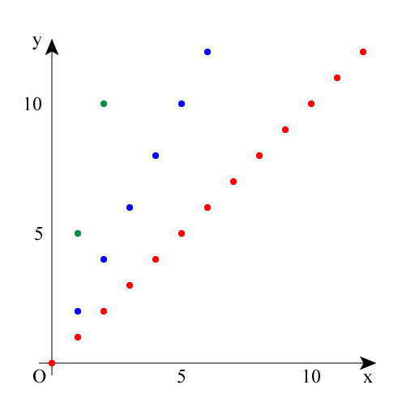
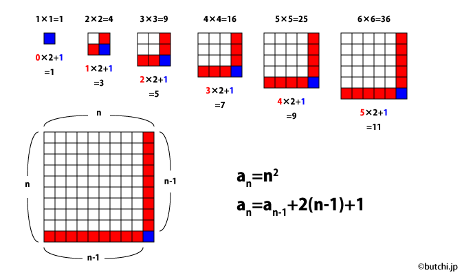
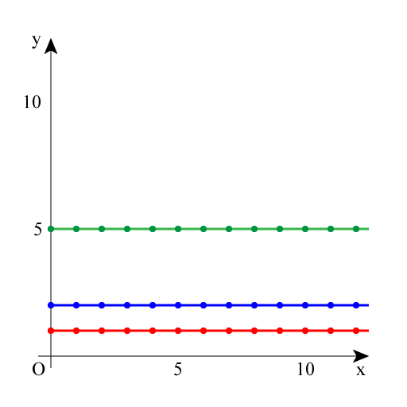

| n | 0 | 1 | 2 | 3 | 4 | 5 | … |
|---|---|---|---|---|---|---|---|
| an | 0 | 2 | 4 | 6 | 8 | 10 | … |
| n | 0 | 1 | 2 | 3 | 4 | 5 | … |
|---|---|---|---|---|---|---|---|
| bn | 0 | 5 | 10 | 15 | 20 | 25 | … |
| n | 0 | 1 | 2 | 3 | 4 | 5 | … |
|---|---|---|---|---|---|---|---|
| cn | 0 | 1 | 2 | 3 | 4 | 5 | … |

階差数列が一定値である数列を等差数列といいます。
等差数列のグラフ（離散的）を連続化したものが1次関数。
「yはxに比例している」といいます。
比例していることを「線型（線形）である」といいます。
| n | 0 | 1 | 2 | 3 | 4 | 5 | … |
|---|---|---|---|---|---|---|---|
| dn | 0 | 1 | 4 | 9 | 16 | 25 | … |
| n | 1 | 2 | 3 | 4 | 5 | … |
|---|---|---|---|---|---|---|
| dn-dn-1 | 1 | 3 | 5 | 7 | 9 | … |
2乗の数列の差分（階差数列）は等差数列。
2次関数の「2」のことを最高次数と呼びます。
2次関数の微分は1次関数です。
前の値から次の値が決まる式。
変数によって直接求められる式のことを一般項と呼びます（an=n2+n+1など）。
dn+1 = dn+2n+1

定数のこと。
微分すると0になります。
0次関数の積分は1次関数。

y = x * x
y = Math.pow(x, 2)
上記2つのコードは同じ結果を返します。状況に応じて使い分けましょう。（計算効率を重視するなら前者、変数が長いときは後者、など。）
言語によってはx^2とかx**2で書ける場合もあります。
JavaScriptでx^2と書くと「xと2のビット毎の排他的論理和」になってしまうので注意しましょう。
微小区間の変化量のこと。
連続関数における、グラフの傾きのこと。
多項式を微分すると最高次数が1つ減ります。
グラフの面積のこと。
微分の逆の操作が積分です。
リーマン積分、ルベーグ積分など、いくつか方法があります。
微分前の関数に定数が足されていても微分はすべて同じなので、不定積分には積分定数（Cとすることが多い）という数値を付けて表します。
2次関数を微分すると1次関数になり、1次関数を微分すると0次関数になります。
例:
0次関数を積分すると1次関数になり、1次関数を積分すると2次関数になります。
例: